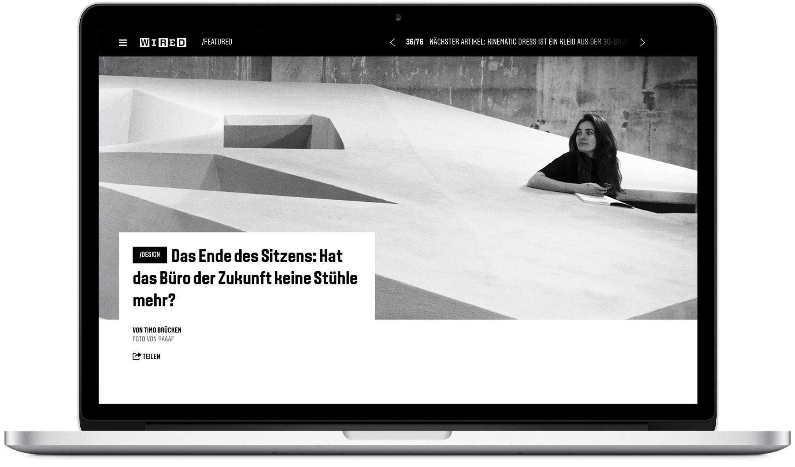
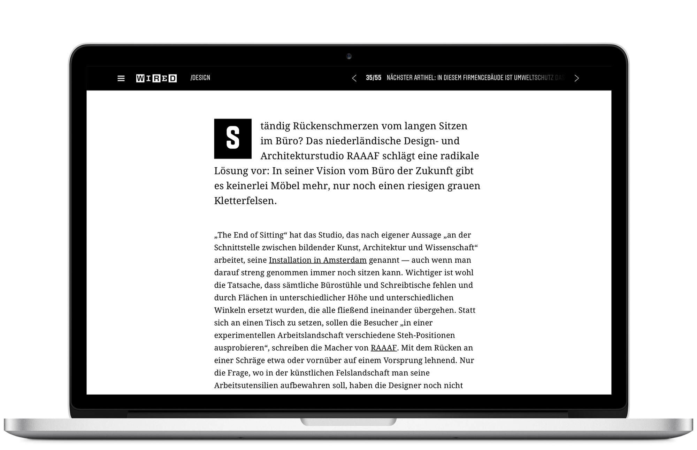
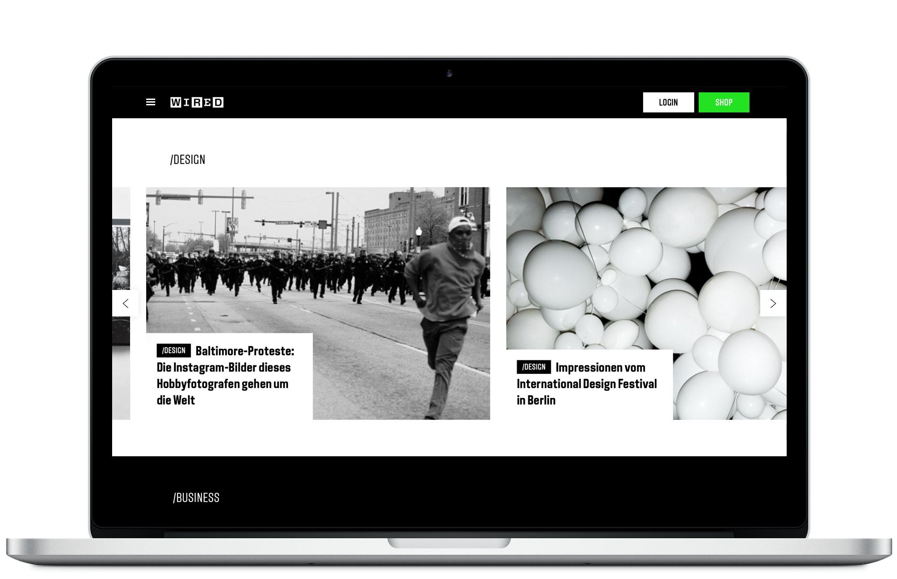
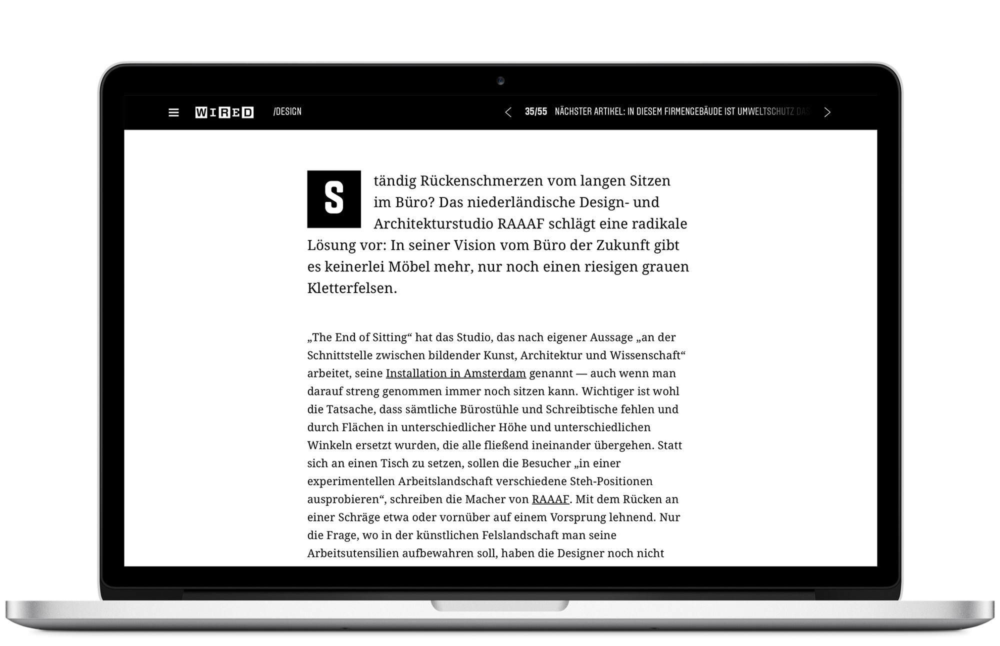
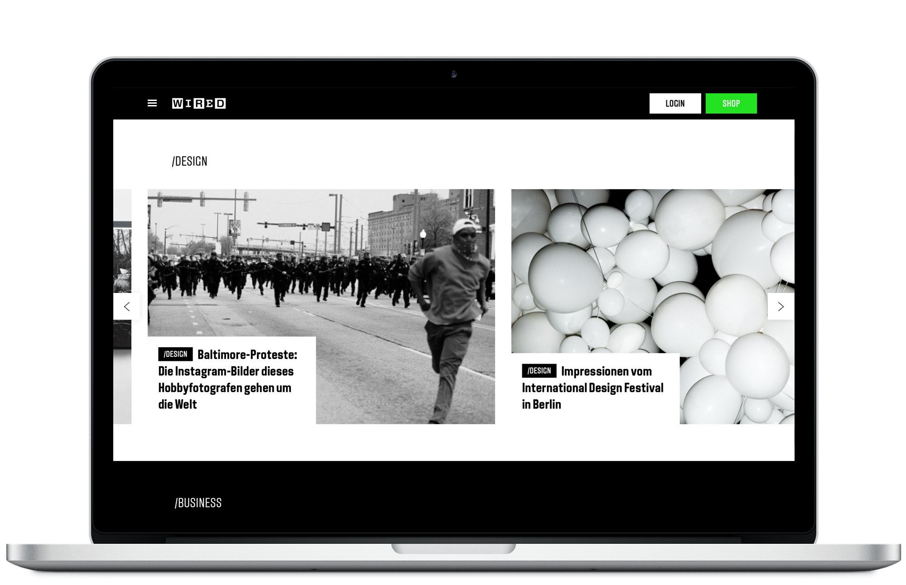

Wired
We designed Wired's site as part of it's launch in Germany. Wired is known for its high quality content and visuals and we wanted to celebrate that in the design. To do this we focused on creating a great reading experience. Beautiful typography, big,
easy to read type and huge imagery.
Content is organized in collections of topics like tech,
design and business as well as types of content like
columns, featured and latest. During events like CES
temporary collections can be added. The site is fully
responsive and articles are swipeable to easily go to
the next or previous.




Article hero

Article
Article gallery

Collections